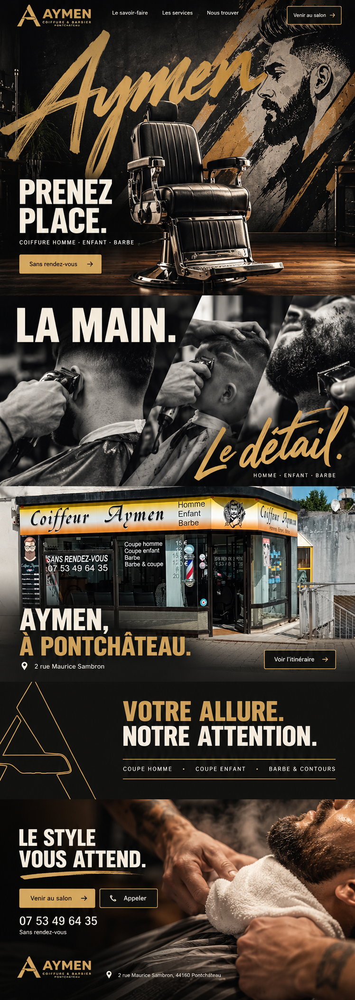
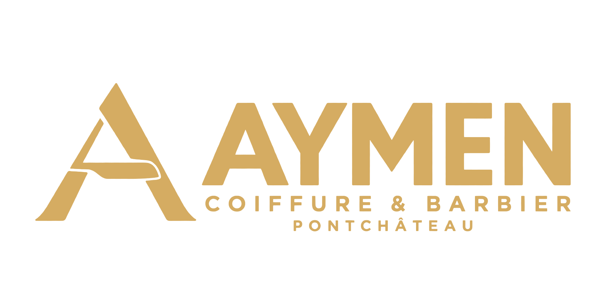
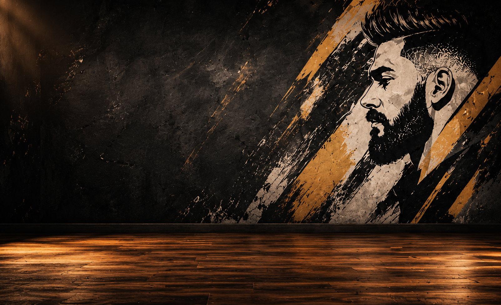
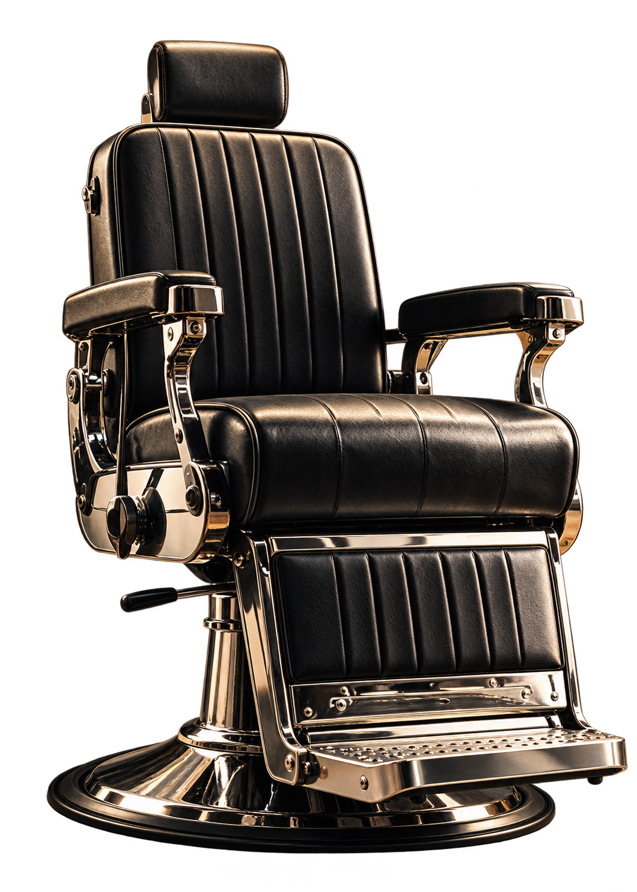

Identidade, assets e implementação
PRENEZ
PLACE.
Cadeira em primeiro plano, assinatura em pincel e um cenário gráfico de campanha. A fachada real situa a marca no percurso e conduz a telefone e itinerário.
Sem vídeo. O site usa planos HTML/SVG/CSS. Browser QA permanece UNVERIFIED por indisponibilidade da prévia; as imagens de referência não são screenshots do site implementado.
01 · Escolha registrada
Modelo 3 completo.

Estudo visual gerado escolhido pelo cliente. Hero e corpo desse modelo, sem mistura.
| Ordem | Cena | Origem |
|---|---|---|
| 1 | PRENEZ PLACE. | Cadeira, mural e lettering de campanha, separados. |
| 2 | LA MAIN. Le détail. | Campanha preto/branco com três planos diagonais. |
| 3 | AYMEN, À PONTCHÂTEAU. | Fotografia original da fachada. |
| 4 | VOTRE ALLURE. NOTRE ATTENTION. | Único fundo principal liso, carvão. |
| 5 | LE STYLE VOUS ATTEND. | Campanha, telefone e mapa. |
02 · Identidade
A marca. O traço.


PNG aprovado preservado. SVGs nativos em contornos, monograma extraído do A e avatar da marca.


Assinatura em SVG próprio; não é uma fonte de alfabeto completo.
03 · Paleta
Carvão. Âmbar. Matéria.
04 · Tipografia local
Barlow Condensed
VOTRE ALLURE.
NOTRE ATTENTION.
700/800 para os títulos. Sora 400/500/600 para leitura e interface.
Yellowtail
Le détail.
400 para o acento de pincel. Fontes locais incluídas: OFL de Barlow/Sora e Apache 2.0 de Yellowtail.
05 · Hero em planos
Fundo e primeiro plano.

Cenário de campanha, não interior documental da empresa.

Cadeira em RGBA para a composição 2,5D. Sem vídeo ou modelo 3D.
06 · Fachada real
O original permanece.

Cópia byte a byte do arquivo enviado. O site usa WebP e viewBox para omitir a interface da captura; a placa real não é redesenhada.
07 · Roteiros e origem